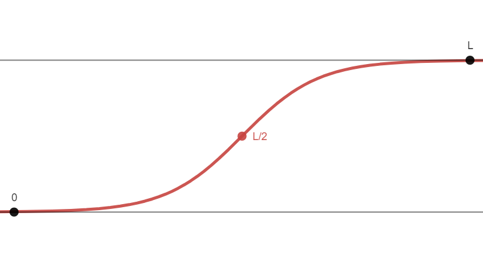

\frac{dy}{dt} = ky(L-y) \;\;\text{ or }\;\; \frac{dy}{dt}= kyL -ky^2 y= \frac{L}{1+Ce^{-Lkt}} (Recall: “Lice minus licked”)
Where:
Also recall that the fastest growth rate occurs at y=\frac{L}{2}.
You’ve got something that wants to grow in an exponential fashion, but it’s limited by some carrying capacity (e.g. there’s a limited food supply, limited space, maximum logical amount, etc.). As you take the limit as t \rightarrow \infty, this function will trend towards that carrying capacity L.
If you just wanna play with the variables, here’s a quick desmos graph.

The rate at which the flu spreads in a community is modeled by: \frac{dP}{dt} = 0.001P(3000-P) Where t is measured in days.
P(t) = \frac{3000}{1+Ce^{-(3000(0.001))t}} P(t) = \frac{3000}{1+Ce^{-3t}} Given P(0) = 50, 50 = \frac{3000}{1+C} 50+50C = 3000 50C = 2950 C=59 \boxed{P(t) = \frac{3000}{1+59e^{-3t}}} 2. When is the flu spreading the fastest?
\frac{L}{2} = \frac{3000}{2} = \frac{3000}{1+59e^{-3t}} 1500 = \frac{3000}{1+59e^{-3t}}
1500+1500(59e^{-3t}) = 3000 1500(59e^{-3t}) = 1500 e^{-3t} = \frac{1}{59} e^{3t} = 59 \boxed{t=\frac{\ln(59)}{3} \approx 1.36 \text{ Days}}
i love sal khan, so here’s a khanacademy video with a worked word problem
also here’s the slope field of it, for all those different given starting values. note how if it starts above the carrying capacity it goes back down to it, making a stable equilibrium at L (or as they call it in the graph, C).
ok that’s pretty much it, these honestly aren’t all that bad
i believe in you, good luck 🙏